Virtualisation, VMs et containers LXC
Tableaux de bord et métriques infrastructure
Exploration et visualisation des logs ELK
Environnements notebooks Python partagés
Hyperviseur — VMs et containers LXC
Gestion des containers Docker
Stockage NAS et partages réseau
Reverse proxy et certificats TLS
Orchestration et automatisation
Dashboards métriques et alertes
Visualisation des logs — stack ELK
Collecte et stockage de métriques

Surveillance disponibilité services
Monitoring système temps réel
Notebooks Python — data science
Forge Git auto-hébergée
Artefacts Maven, Docker, PyPI
Intégration et déploiement continu
SIEM — détection et réponse aux incidents
Gestion des secrets et certificats PKI
Détection comportementale et blocage IP
Base de connaissance interne
Documentation technique des projets
Prise de notes collaborative Markdown
Pare-feu, routage et VPN
DNS filtrant et blocage publicités
Gestion des équipements réseau Unifi
Helpdesk, CMDB et inventaire parc
Stockage fichiers et partage
Gestionnaire de mots de passe